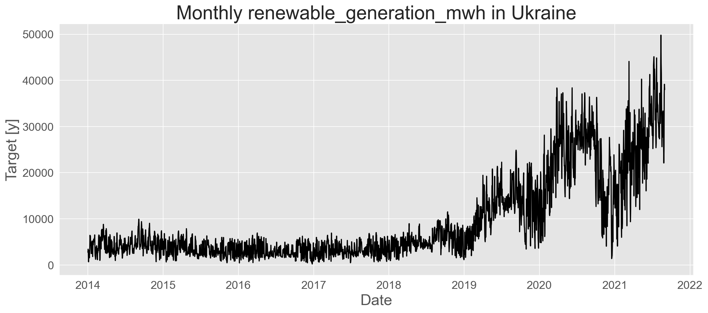
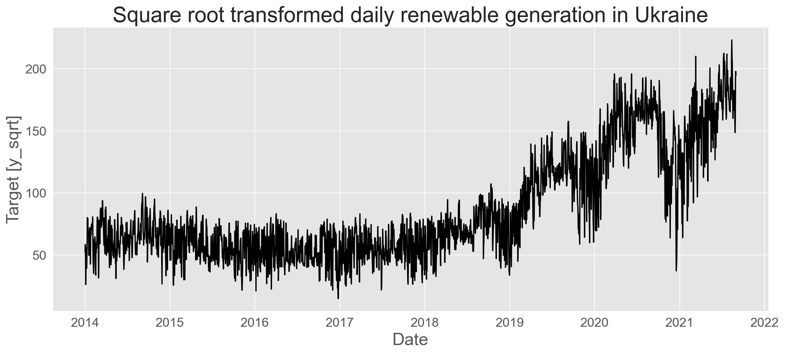
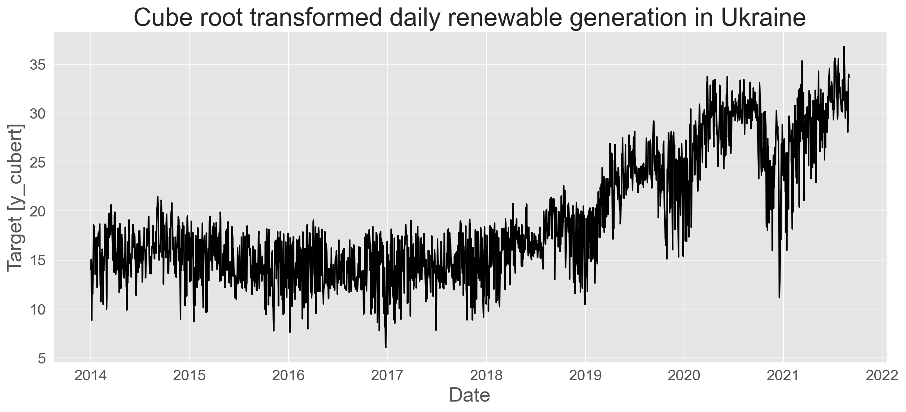
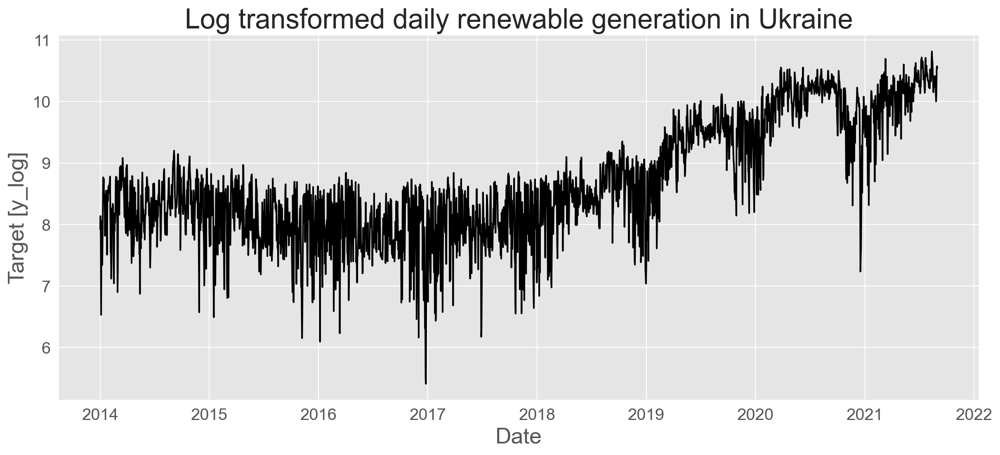
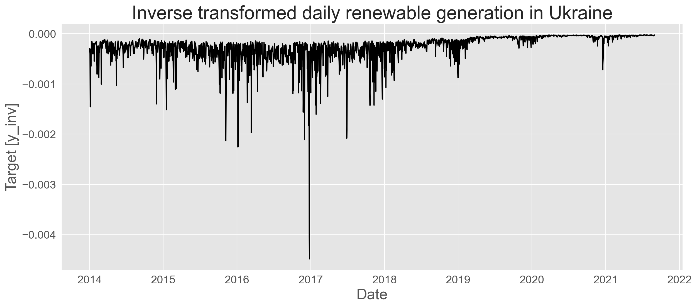
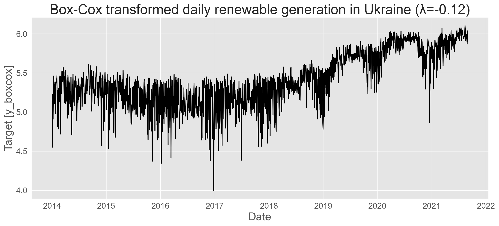
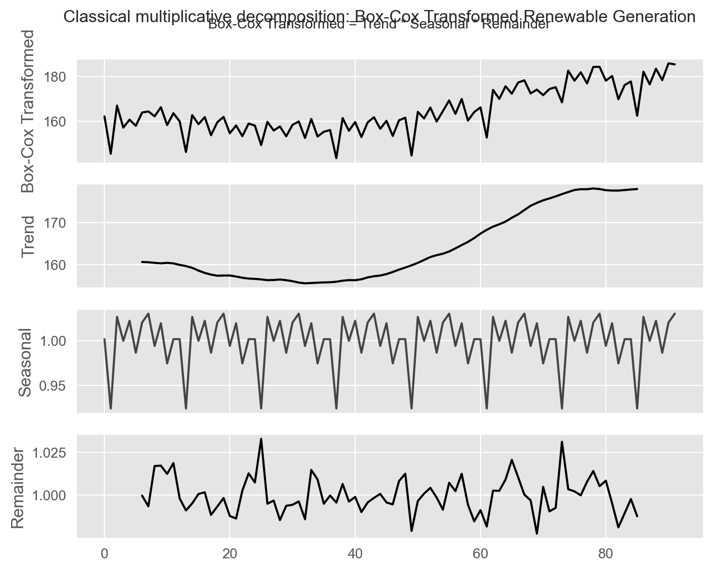
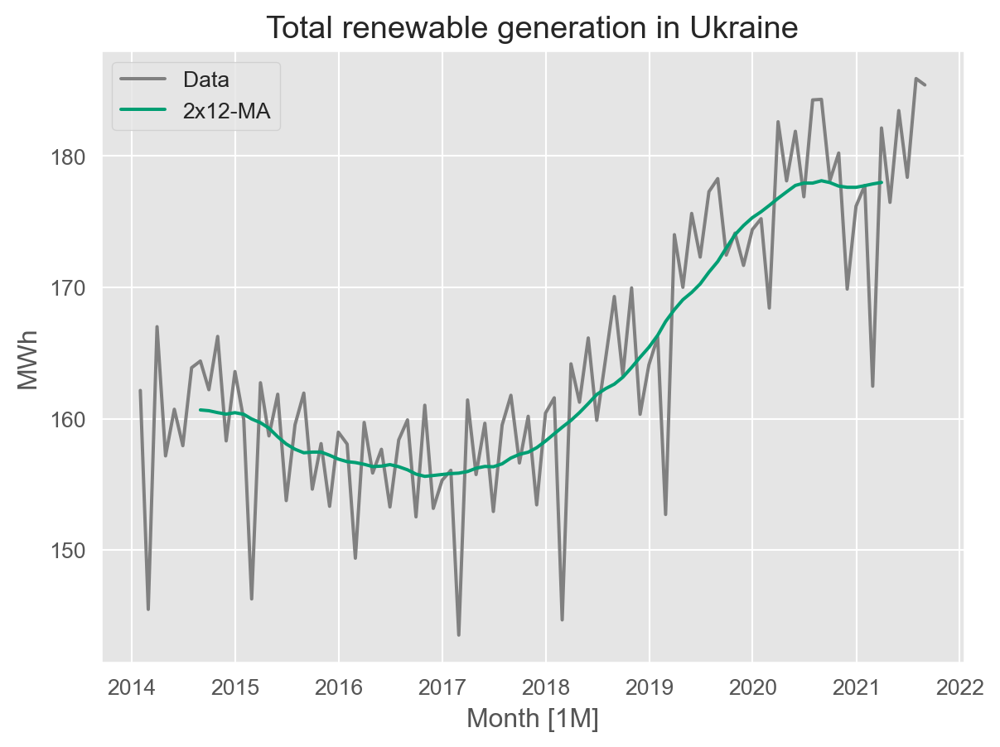
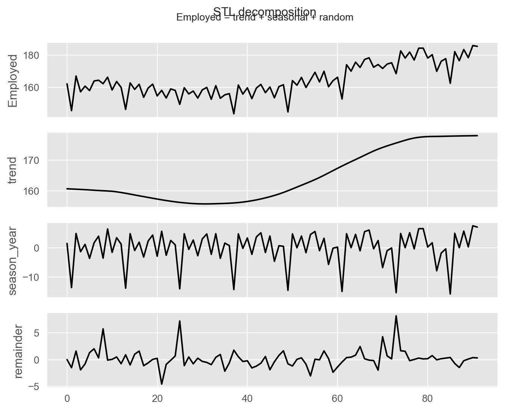

import numpy as np
import random
import pandas as pd
from utilsforecast.plotting import plot_series as plot_series_utils
import seaborn as sns
import matplotlib.pyplot as plt
sns.set_style("whitegrid")
plt.style.use("ggplot")
import matplotlib as mpl
from cycler import cycler
mpl.rcParams['axes.prop_cycle'] = cycler(color=["#000000", "#000000"])
from fpppy.utils import plot_series
import calendar
from tsfeatures import *
from statsmodels.tsa.seasonal import STL
from statsforecast import StatsForecast
from coreforecast.scalers import boxcox, boxcox_lambda
from statsmodels.tsa.seasonal import seasonal_decomposeTime series decomposition
Imports
Load Ukraine electricity generation data
Weather data
weather_df = pd.read_csv(
'https://raw.githubusercontent.com/Aranaur/aranaur.rbind.io/main/datasets/energy_ua/energy_weather_ua_2016_2019.csv'
).drop(columns=['Heneratsia'])
# change columns names
weather_df.columns = [
'ds',
'w_cloudiness_percent',
'w_temperature_celsius',
'w_wind_speed_m_s',
'w_pressure_hpa',
'w_humidity_percent',
'w_sundial_hours',
'w_air_density_kg_m3',
]
weather_df| ds | w_cloudiness_percent | w_temperature_celsius | w_wind_speed_m_s | w_pressure_hpa | w_humidity_percent | w_sundial_hours | w_air_density_kg_m3 | |
|---|---|---|---|---|---|---|---|---|
| 0 | 2016-01-01 01:00:00 | 0.00 | -7 | 1 | 765 | 96 | 0 | 1.338069 |
| 1 | 2016-01-01 02:00:00 | 0.00 | -7 | 1 | 765 | 96 | 0 | 1.338069 |
| 2 | 2016-01-01 03:00:00 | 0.00 | -7 | 1 | 765 | 96 | 0 | 1.338069 |
| 3 | 2016-01-01 04:00:00 | 0.00 | -7 | 1 | 765 | 96 | 0 | 1.338069 |
| 4 | 2016-01-01 05:00:00 | 0.00 | -8 | 1 | 765 | 95 | 0 | 1.343119 |
| ... | ... | ... | ... | ... | ... | ... | ... | ... |
| 33523 | 2019-10-28 20:00:00 | 0.25 | 11 | 1 | 757 | 100 | 0 | 1.240156 |
| 33524 | 2019-10-28 21:00:00 | 0.25 | 11 | 0 | 757 | 100 | 0 | 1.240156 |
| 33525 | 2019-10-28 22:00:00 | 0.25 | 11 | 1 | 757 | 100 | 0 | 1.240156 |
| 33526 | 2019-10-28 23:00:00 | 0.00 | 9 | 1 | 757 | 100 | 0 | 1.248951 |
| 33527 | 2019-10-29 00:00:00 | 0.00 | 9 | 1 | 757 | 100 | 0 | 1.248951 |
33528 rows × 8 columns
Electricity generation data
electricity_df = pd.read_csv(
'https://raw.githubusercontent.com/Aranaur/aranaur.rbind.io/main/datasets/energy_ua/energy_ua_2014_2021.csv'
)
electricity_df.columns = [
'ds',
'nuclear_generation_mwh',
'total_consumption_mwh',
'pump_storage_generation_mwh',
'pump_storage_consumption_mwh',
'hydro_generation_mwh',
'cogeneration_generation_mwh',
'thermal_generation_mwh',
'export_blr_rus_mwh',
'export_eu_mwh',
'export_mld_mwh',
'renewable_generation_mwh'
]
electricity_df| ds | nuclear_generation_mwh | total_consumption_mwh | pump_storage_generation_mwh | pump_storage_consumption_mwh | hydro_generation_mwh | cogeneration_generation_mwh | thermal_generation_mwh | export_blr_rus_mwh | export_eu_mwh | export_mld_mwh | renewable_generation_mwh | |
|---|---|---|---|---|---|---|---|---|---|---|---|---|
| 0 | 2014-01-01 00:00:00 | 10728 | 20586 | 0 | 0 | 1809 | 2825 | 6044 | -365 | -355 | -150 | 50 |
| 1 | 2014-01-01 01:00:00 | 10606 | 19665 | 0 | 0 | 863 | 2822 | 6038 | -200 | -409 | -104 | 49 |
| 2 | 2014-01-01 02:00:00 | 10515 | 19107 | 0 | 0 | 355 | 2837 | 5865 | -59 | -400 | -60 | 54 |
| 3 | 2014-01-01 03:00:00 | 10475 | 18453 | 0 | 0 | 185 | 2827 | 5524 | -175 | -399 | -26 | 42 |
| 4 | 2014-01-01 04:00:00 | 10427 | 18072 | 0 | -488 | 274 | 2826 | 5506 | -90 | -421 | -11 | 49 |
| ... | ... | ... | ... | ... | ... | ... | ... | ... | ... | ... | ... | ... |
| 68226 | 2021-10-13 18:00:00 | 9954 | 19029 | 561 | 0 | 1988 | 646 | 5232 | 126 | -12 | 13 | 521 |
| 68227 | 2021-10-13 19:00:00 | 9960 | 19528 | 1175 | 0 | 2150 | 640 | 5303 | -73 | 12 | -64 | 425 |
| 68228 | 2021-10-13 20:00:00 | 9964 | 19627 | 1205 | 0 | 2089 | 644 | 5342 | 13 | -3 | -70 | 443 |
| 68229 | 2021-10-13 21:00:00 | 9943 | 19167 | 798 | 0 | 1771 | 640 | 5373 | -114 | 1 | -32 | 787 |
| 68230 | 2021-10-13 22:00:00 | 9951 | 18320 | 0 | 0 | 1704 | 640 | 5295 | -45 | -21 | 46 | 750 |
68231 rows × 12 columns
Merge datasets
df = pd.merge(
electricity_df,
weather_df,
on='ds',
how='left'
)
df['ds'] = pd.to_datetime(df['ds'])
df| ds | nuclear_generation_mwh | total_consumption_mwh | pump_storage_generation_mwh | pump_storage_consumption_mwh | hydro_generation_mwh | cogeneration_generation_mwh | thermal_generation_mwh | export_blr_rus_mwh | export_eu_mwh | export_mld_mwh | renewable_generation_mwh | w_cloudiness_percent | w_temperature_celsius | w_wind_speed_m_s | w_pressure_hpa | w_humidity_percent | w_sundial_hours | w_air_density_kg_m3 | |
|---|---|---|---|---|---|---|---|---|---|---|---|---|---|---|---|---|---|---|---|
| 0 | 2014-01-01 00:00:00 | 10728 | 20586 | 0 | 0 | 1809 | 2825 | 6044 | -365 | -355 | -150 | 50 | NaN | NaN | NaN | NaN | NaN | NaN | NaN |
| 1 | 2014-01-01 01:00:00 | 10606 | 19665 | 0 | 0 | 863 | 2822 | 6038 | -200 | -409 | -104 | 49 | NaN | NaN | NaN | NaN | NaN | NaN | NaN |
| 2 | 2014-01-01 02:00:00 | 10515 | 19107 | 0 | 0 | 355 | 2837 | 5865 | -59 | -400 | -60 | 54 | NaN | NaN | NaN | NaN | NaN | NaN | NaN |
| 3 | 2014-01-01 03:00:00 | 10475 | 18453 | 0 | 0 | 185 | 2827 | 5524 | -175 | -399 | -26 | 42 | NaN | NaN | NaN | NaN | NaN | NaN | NaN |
| 4 | 2014-01-01 04:00:00 | 10427 | 18072 | 0 | -488 | 274 | 2826 | 5506 | -90 | -421 | -11 | 49 | NaN | NaN | NaN | NaN | NaN | NaN | NaN |
| ... | ... | ... | ... | ... | ... | ... | ... | ... | ... | ... | ... | ... | ... | ... | ... | ... | ... | ... | ... |
| 68226 | 2021-10-13 18:00:00 | 9954 | 19029 | 561 | 0 | 1988 | 646 | 5232 | 126 | -12 | 13 | 521 | NaN | NaN | NaN | NaN | NaN | NaN | NaN |
| 68227 | 2021-10-13 19:00:00 | 9960 | 19528 | 1175 | 0 | 2150 | 640 | 5303 | -73 | 12 | -64 | 425 | NaN | NaN | NaN | NaN | NaN | NaN | NaN |
| 68228 | 2021-10-13 20:00:00 | 9964 | 19627 | 1205 | 0 | 2089 | 644 | 5342 | 13 | -3 | -70 | 443 | NaN | NaN | NaN | NaN | NaN | NaN | NaN |
| 68229 | 2021-10-13 21:00:00 | 9943 | 19167 | 798 | 0 | 1771 | 640 | 5373 | -114 | 1 | -32 | 787 | NaN | NaN | NaN | NaN | NaN | NaN | NaN |
| 68230 | 2021-10-13 22:00:00 | 9951 | 18320 | 0 | 0 | 1704 | 640 | 5295 | -45 | -21 | 46 | 750 | NaN | NaN | NaN | NaN | NaN | NaN | NaN |
68231 rows × 19 columns
df.info()<class 'pandas.core.frame.DataFrame'>
RangeIndex: 68231 entries, 0 to 68230
Data columns (total 19 columns):
# Column Non-Null Count Dtype
--- ------ -------------- -----
0 ds 68231 non-null datetime64[ns]
1 nuclear_generation_mwh 68231 non-null int64
2 total_consumption_mwh 68231 non-null int64
3 pump_storage_generation_mwh 68231 non-null int64
4 pump_storage_consumption_mwh 68231 non-null int64
5 hydro_generation_mwh 68231 non-null int64
6 cogeneration_generation_mwh 68231 non-null int64
7 thermal_generation_mwh 68231 non-null int64
8 export_blr_rus_mwh 68231 non-null int64
9 export_eu_mwh 68231 non-null int64
10 export_mld_mwh 68231 non-null int64
11 renewable_generation_mwh 68231 non-null int64
12 w_cloudiness_percent 33528 non-null float64
13 w_temperature_celsius 33528 non-null float64
14 w_wind_speed_m_s 33528 non-null float64
15 w_pressure_hpa 33528 non-null float64
16 w_humidity_percent 33528 non-null float64
17 w_sundial_hours 33528 non-null float64
18 w_air_density_kg_m3 33528 non-null float64
dtypes: datetime64[ns](1), float64(7), int64(11)
memory usage: 9.9 MBPivot data to long format
df_h = df.melt(
id_vars=['ds'],
var_name='unique_id',
value_name='y'
)
df_h| ds | unique_id | y | |
|---|---|---|---|
| 0 | 2014-01-01 00:00:00 | nuclear_generation_mwh | 10728.0 |
| 1 | 2014-01-01 01:00:00 | nuclear_generation_mwh | 10606.0 |
| 2 | 2014-01-01 02:00:00 | nuclear_generation_mwh | 10515.0 |
| 3 | 2014-01-01 03:00:00 | nuclear_generation_mwh | 10475.0 |
| 4 | 2014-01-01 04:00:00 | nuclear_generation_mwh | 10427.0 |
| ... | ... | ... | ... |
| 1228153 | 2021-10-13 18:00:00 | w_air_density_kg_m3 | NaN |
| 1228154 | 2021-10-13 19:00:00 | w_air_density_kg_m3 | NaN |
| 1228155 | 2021-10-13 20:00:00 | w_air_density_kg_m3 | NaN |
| 1228156 | 2021-10-13 21:00:00 | w_air_density_kg_m3 | NaN |
| 1228157 | 2021-10-13 22:00:00 | w_air_density_kg_m3 | NaN |
1228158 rows × 3 columns
New datasets with different time resolutions with aggregation (sum), but if variable starts with “w_” then mean aggregation
def resample_data(df, freq_code):
"""
Агрегує дані до заданої частоти.
Використовує суму для енергетичних метрик і середнє для погодних.
"""
# Групуємо та агрегуємо
resampled_df = df.groupby(['unique_id', pd.Grouper(key='ds', freq=freq_code)])['y'].agg(['sum', 'mean']).reset_index()
# Визначаємо правильне значення на основі типу метрики
is_weather_metric = resampled_df['unique_id'].str.startswith('w_')
resampled_df['y'] = np.where(
is_weather_metric,
resampled_df['mean'], # Середнє для погоди
resampled_df['sum'] # Сума для енергетики
)
# Видаляємо проміжні стовпці
return resampled_df.drop(columns=['sum', 'mean'])
# Тепер викликаємо функцію для кожної частоти
df_d = resample_data(df_h, 'D') # День
df_w = resample_data(df_h, 'W') # Тиждень
df_m = resample_data(df_h, 'ME') # Кінець місяця
df_q = resample_data(df_h, 'QE') # Кінець кварталуBasic plot of time series
df_d = df_d.query("ds <= '2021-08-31'")
ts_id = ['hydro_generation_mwh', 'thermal_generation_mwh', 'renewable_generation_mwh']
plot_series(df_d, xlabel="Date", id_col="unique_id", target_col="y", ids=['renewable_generation_mwh'],
title=f"Monthly {ts_id[2]} in Ukraine")
Mathematical transformations
sqrt transformation
df_d['y_sqrt'] = np.sqrt(df_d['y'])
plot_series(df_d, xlabel="Date", id_col="unique_id", target_col="y_sqrt", ids=["renewable_generation_mwh"],
title="Square root transformed daily renewable generation in Ukraine")
1/3 power transformation
df_d['y_cubert'] = np.cbrt(df_d['y'])
plot_series(df_d, xlabel="Date", id_col="unique_id", target_col="y_cubert", ids=["renewable_generation_mwh"],
title="Cube root transformed daily renewable generation in Ukraine")
log transformation
df_d['y_log'] = np.log1p(df_d['y'])
plot_series(df_d, xlabel="Date", id_col="unique_id", target_col="y_log", ids=["renewable_generation_mwh"],
title="Log transformed daily renewable generation in Ukraine")
\(\frac{-1}{y_t}\) transformation
df_d['y_inv'] = -1 / df_d['y']
plot_series(df_d, xlabel="Date", id_col="unique_id", target_col="y_inv", ids=["renewable_generation_mwh"],
title="Inverse transformed daily renewable generation in Ukraine")
Box-Cox transformation
from matplotlib.animation import FuncAnimation, PillowWriter
import os
# Filter the data for the specific time series
renewable_df = df_d.query("unique_id == 'renewable_generation_mwh'").copy()
# Ensure the target directory exists
output_dir = "img"
if not os.path.exists(output_dir):
os.makedirs(output_dir)
fig, ax = plt.subplots()
line, = ax.plot([], [], color='black')
lambda_text = ax.text(0.05, 0.9, '', transform=ax.transAxes)
def init():
ax.set_xlabel("Date")
ax.set_ylabel("Generation (MWh)")
ax.set_title("Box-Cox Transformation of Daily Renewable Generation")
line.set_data([], [])
return line, lambda_text
def update(frame):
# Animate lambda from 1 down to -1
lmbda = 1 - frame * 0.02
# Apply Box-Cox transformation
# Add a small constant to avoid issues with zero values if any
transformed_y = boxcox(renewable_df['y'].values + 1e-6, lmbda)
line.set_data(renewable_df['ds'], transformed_y)
ax.relim()
ax.autoscale_view()
lambda_text.set_text(f'λ = {lmbda:.2f}')
fig.canvas.draw()
return line, lambda_text
# Create the animation
ani = FuncAnimation(fig, update, frames=101, init_func=init, blit=True, interval=100)
# Save the animation as a GIF
writer = PillowWriter(fps=10)
ani.save(os.path.join(output_dir, "boxcox_animation_renewable.gif"), writer=writer)
plt.close(fig)Choose optimal lambda for Box-Cox transformation
renewable_df = df_d.query("unique_id == 'renewable_generation_mwh'").copy()
optimal_lambda = boxcox_lambda(renewable_df['y'], method='loglik', season_length=7) # guerrero / loglik
optimal_lambda-0.11811874806880951Apply Box-Cox transformation with optimal lambda
renewable_df['y_boxcox'] = boxcox(renewable_df['y'], lmbda=optimal_lambda)
plot_series(renewable_df, xlabel="Date", target_col="y_boxcox",
title=f"Box-Cox transformed daily renewable generation in Ukraine (λ={optimal_lambda:.2f})")
Classical decomposition
Additive decomposition of Box-Cox transformed data
renewable_df_m = renewable_df.set_index('ds').resample('M').sum().reset_index()
dcmp_classical = seasonal_decompose(
renewable_df_m["y_boxcox"], model="additive", period=12
)
dcmp = pd.DataFrame({
"ds": renewable_df_m["ds"],
"data": renewable_df_m["y_boxcox"],
"trend": dcmp_classical.trend,
"seasonal": dcmp_classical.seasonal,
"remainder": dcmp_classical.resid
}).reset_index(drop=True)
fig, axes = plt.subplots(nrows=4, ncols=1, sharex=True, figsize=(8, 6))
sns.lineplot(data=dcmp, x=dcmp.index, y="data", ax=axes[0])
sns.lineplot(data=dcmp, x=dcmp.index, y="trend", ax=axes[1])
sns.lineplot(data=dcmp, x=dcmp.index, y="seasonal", ax=axes[2], alpha=0.7)
sns.lineplot(data=dcmp, x=dcmp.index, y="remainder", ax=axes[3])
axes[0].set_ylabel("Box-Cox Transformed")
axes[1].set_ylabel("Trend")
axes[2].set_ylabel("Seasonal")
axes[3].set_ylabel("Remainder")
fig.suptitle("Classical additive decomposition: Box-Cox Transformed Renewable Generation")
fig.subplots_adjust(top=0.90)
fig.text(0.5, 0.95, "Box-Cox Transformed = Trend + Seasonal + Remainder", ha='center')
plt.xlabel("")
plt.show()
Multiplicative decomposition of Box-Cox transformed data
dcmp_classical_mul = seasonal_decompose(
renewable_df_m["y_boxcox"], model="multiplicative", period=12
)
dcmp_mul = pd.DataFrame({
"ds": renewable_df_m["ds"],
"data": renewable_df_m["y_boxcox"],
"trend": dcmp_classical_mul.trend,
"seasonal": dcmp_classical_mul.seasonal,
"remainder": dcmp_classical_mul.resid
}).reset_index(drop=True)
fig, axes = plt.subplots(nrows=4, ncols=1, sharex=True, figsize=(8, 6))
sns.lineplot(data=dcmp_mul, x=dcmp_mul.index, y="data", ax=axes[0])
sns.lineplot(data=dcmp_mul, x=dcmp_mul.index, y="trend", ax=axes[1])
sns.lineplot(data=dcmp_mul, x=dcmp_mul.index, y="seasonal", ax=axes[2], alpha=0.7)
sns.lineplot(data=dcmp_mul, x=dcmp_mul.index, y="remainder", ax=axes[3])
axes[0].set_ylabel("Box-Cox Transformed")
axes[1].set_ylabel("Trend")
axes[2].set_ylabel("Seasonal")
axes[3].set_ylabel("Remainder")
fig.suptitle("Classical multiplicative decomposition: Box-Cox Transformed Renewable Generation")
fig.subplots_adjust(top=0.90)
fig.text(0.5, 0.95, "Box-Cox Transformed = Trend * Seasonal * Remainder", ha='center')
plt.xlabel("")
plt.show()
Moving average
renewable_df_m['y_boxcox_ma12'] = renewable_df_m['y_boxcox'].rolling(window=12, center=True).mean()
renewable_df_m['y_boxcox_ma12x2'] = renewable_df_m['y_boxcox_ma12'].rolling(window=2, center=True).mean()
fig, ax = plt.subplots()
sns.lineplot(data=renewable_df_m, x="ds", y="y_boxcox", label="Data",
color="grey")
sns.lineplot(
data=renewable_df_m, x="ds", y="y_boxcox_ma12x2", label="2x12-MA",
color="#009E73"
)
ax.set_title("Total renewable generation in Ukraine")
ax.set_xlabel("Month [1M]")
ax.set_ylabel("MWh")
plt.show()
STL decomposition
stl = STL(renewable_df_m["y_boxcox"], period=12, robust=True, seasonal=13, trend=21)
res_stl = stl.fit()
dcmp = pd.DataFrame({
"ds": renewable_df_m["ds"],
"data": renewable_df_m["y_boxcox"],
"trend": res_stl.trend,
"seasonal": res_stl.seasonal,
"remainder": res_stl.resid
}).reset_index(drop=True)
fig, axes = plt.subplots(nrows=4, ncols=1, sharex=True, figsize=(8, 6))
sns.lineplot(data=dcmp, x=dcmp.index, y="data", ax=axes[0])
sns.lineplot(data=dcmp, x=dcmp.index, y="trend", ax=axes[1])
sns.lineplot(data=dcmp, x=dcmp.index, y="seasonal", ax=axes[2])
sns.lineplot(data=dcmp, x=dcmp.index, y="remainder", ax=axes[3])
axes[0].set_ylabel("Employed")
axes[1].set_ylabel("trend")
axes[2].set_ylabel("season_year")
axes[3].set_ylabel("remainder")
fig.suptitle("STL decomposition")
fig.subplots_adjust(top=0.90)
fig.text(0.5, 0.95, "Employed = trend + seasonal + random", ha="center")
plt.xlabel("")
plt.show()